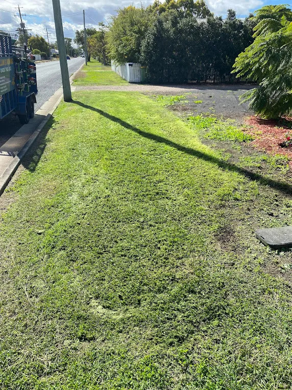
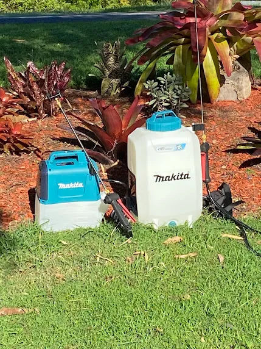
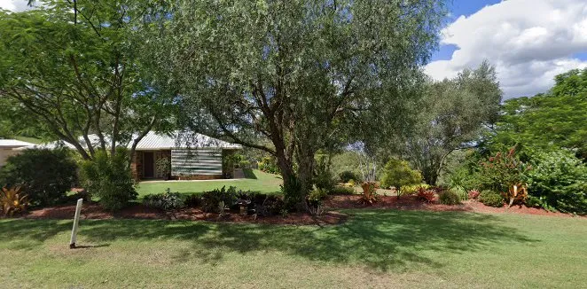
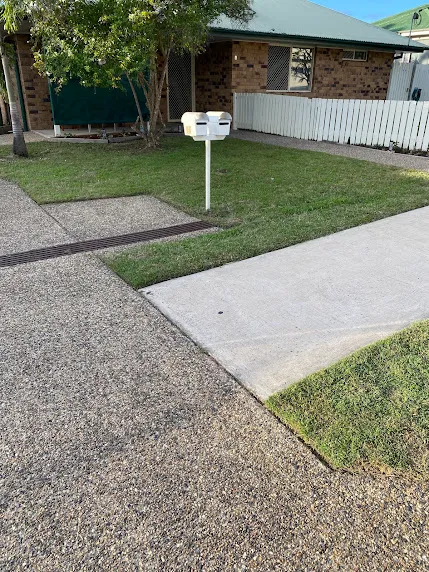
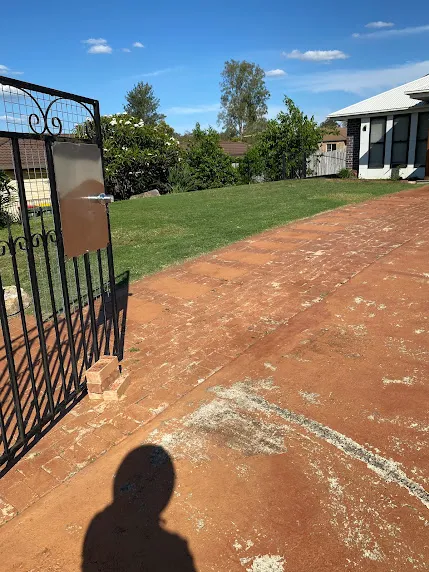
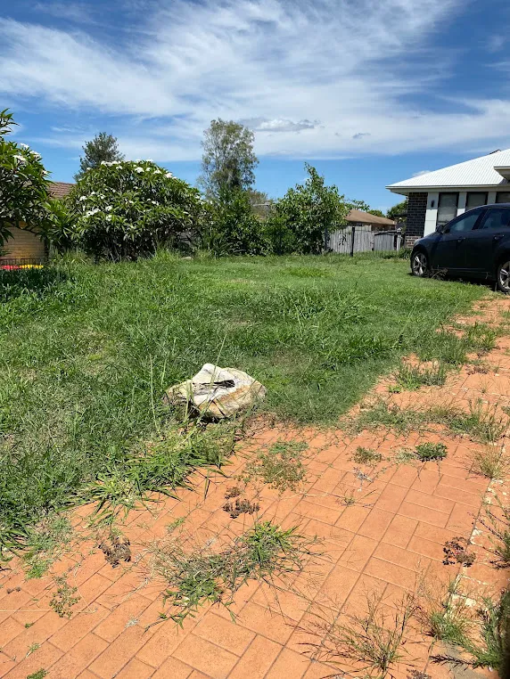
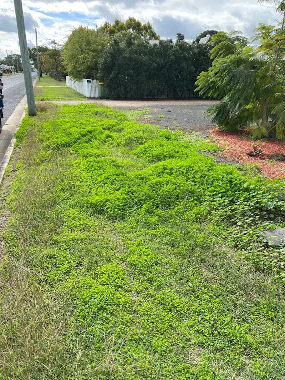

Fence Line Spraying Lockyer Valley — Keep Your Boundaries Clear
Stop growth swallowing your fences, gates and driveways. Clean, defined boundary lines on rural and residential properties across the region.
Why Boundaries Need Chemical Control, Not a Whipper Snipper
Boundary spraying across the Lockyer Valley uses a knockdown or residual herbicide to maintain a clear strip beneath and beside fencing, where a mower can't reach and trimming is slow, awkward and repetitive. On a long rural boundary, spraying does in one pass what would otherwise take hours of line trimming several times a season.
There's a practical case beyond appearance. Growth against a fence traps moisture and accelerates corrosion on wire and steel posts. It hides damage, so you don't notice a break until stock are out. It carries fire straight along a boundary in summer. And on timber fencing it holds damp against the base of the palings, which is where rot starts. Regular treatment protects the asset, not just the look.

Signs Your Boundaries Need Treatment
- Grass and weeds grown up through and over the wire, hiding the fence itself
- Vines and woody regrowth pulling on wire or leaning posts out of line
- Dry standing growth along the boundary heading into fire season
- Gates that no longer swing clear because of growth at the base
- Weeds pushing up through gravel driveways, around tanks and along shed edges
- Trimming the same fence line four or five times a season with no lasting result
Our Process
-
STEP 01
Walk the boundary
We identify growth types, check for desirable plantings and note any sensitive areas like waterways, tanks or vegetable gardens.
-
STEP 02
Select the product
Knockdown for immediate clearing, or a residual mix where you want the strip to stay clear for months.
-
STEP 03
Cut back heavy growth first
Where necessary, so spray reaches the base of the plants rather than just the tops.
-
STEP 04
Apply in suitable conditions
Low wind to prevent drift, and no rain forecast that would wash off the application.
-
STEP 05
Follow up
A return pass on anything that survives, plus a scheduled repeat before growth re-establishes.
Why Use Us
- Drift-conscious application — we work in the right conditions and protect adjacent plantings and pasture
- Residual options so boundaries stay clear for months rather than weeks
- Long runs handled efficiently — acreage boundaries done in a single visit
- Fully insured — public liability cover on chemical application
- Bundled with mowing so your whole property is handled by one contractor
Recent Boundary Projects in the Lockyer Valley
Fence and boundary work completed across rural and residential properties in the region.





Areas We Cover
We provide fence line spraying throughout Laidley, Plainland, Gatton, Regency Downs, Hatton Vale and Kensington Grove. Rural and lifestyle blocks across the Lockyer Valley often carry hundreds of metres of fencing, which makes this one of the highest-value services we offer — the time saved compared with trimming it by hand is substantial. Most owners pair it with an acreage mow so the whole property, boundaries included, is finished in a single visit rather than spread across separate bookings with different contractors.
Inside the lawn itself, weeds are handled under lawn weed control.
Frequently Asked Questions
What is fence line spraying?
It's the application of herbicide along a boundary to maintain a clear strip beneath and around fencing, where mowers can't reach. It keeps fences visible and accessible, reduces fire load, and prevents growth from damaging wire, posts and timber palings.
How much does fence line spraying cost?
Pricing is per linear metre, with rates dropping on longer runs. Heavily overgrown boundaries needing cutting back before spraying cost more on the first visit. We quote after walking the boundary so the figure is accurate rather than a guess over the phone.
How long does it stay clear?
A knockdown treatment keeps the line clear for roughly six to twelve weeks depending on rainfall. A residual product typically holds for four to six months. Most Lockyer Valley properties settle into two or three applications a year to stay on top of it.
Will the spray drift onto my garden or pasture?
Not if it's applied correctly. We spray in low wind conditions, use appropriate nozzles to reduce fine droplets, and shield sensitive areas. Point out any gardens, fruit trees or grazing paddocks when we quote and we'll adjust our approach accordingly.
Is it safe around stock and pets?
Once the application has dried, treated strips are generally safe. Withholding periods vary by product, so we'll give you a specific timeframe on the day — particularly important on rural blocks around Hatton Vale and Regency Downs where stock graze near boundaries.
Reclaim Your Fence Lines
Tell us roughly how many metres of boundary you've got and we'll give you a price per metre.